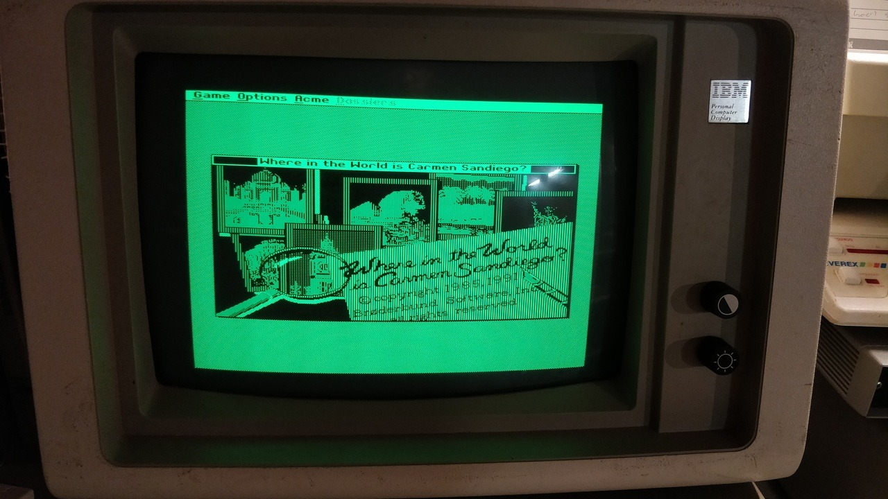
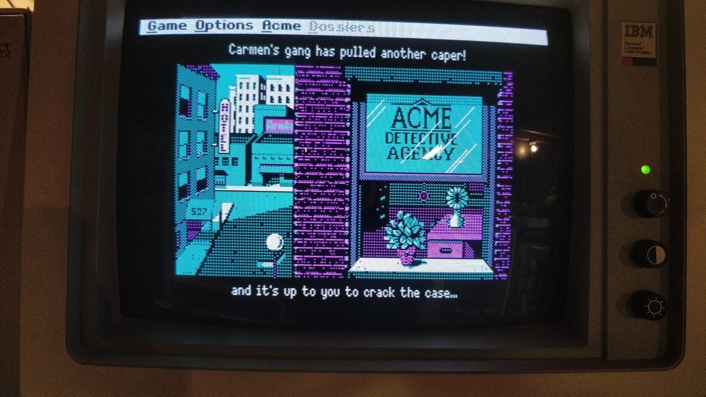
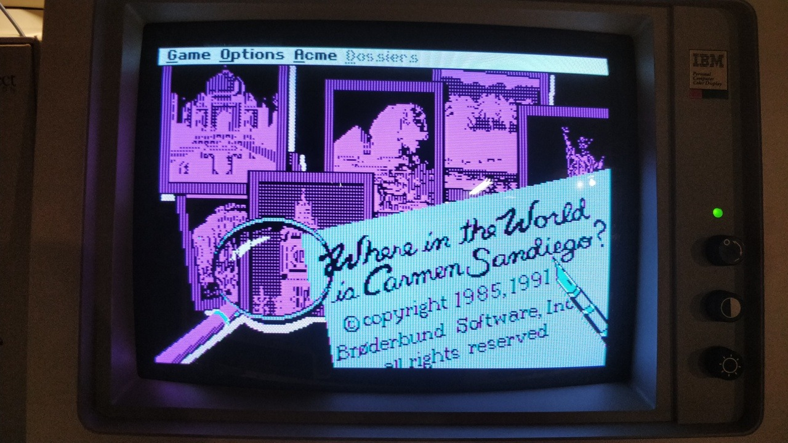
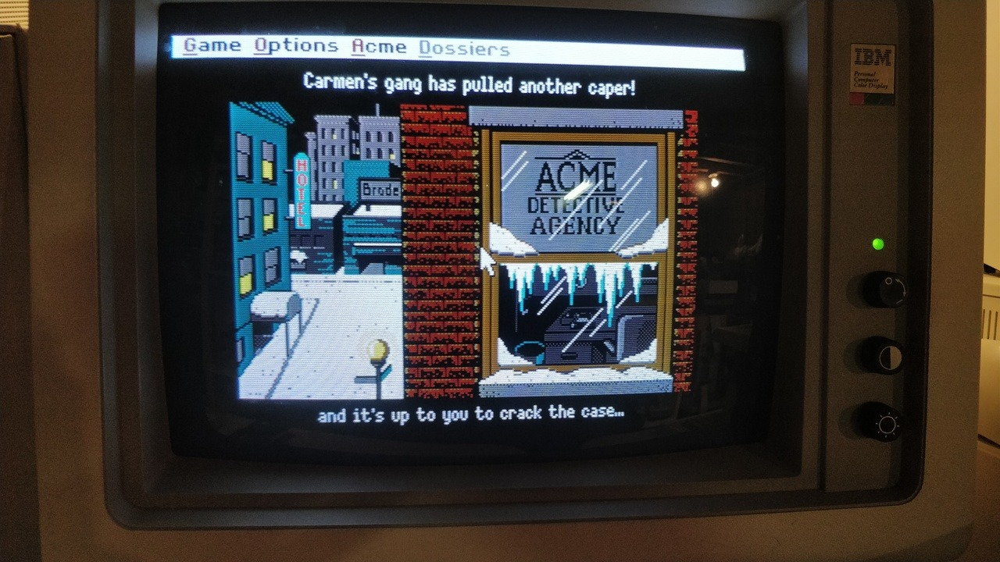
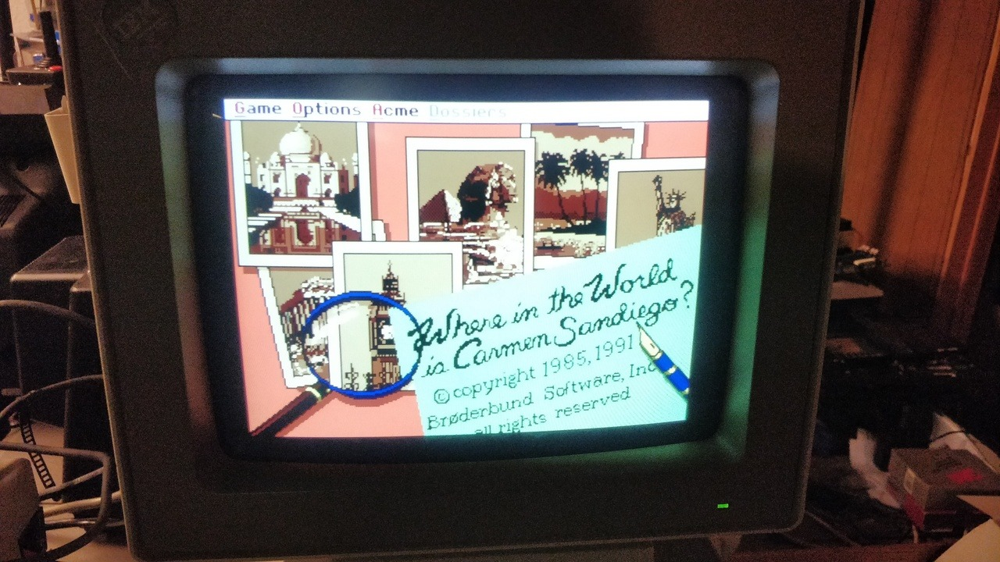

My early 90’s release of Where in the World is Carmen Sandiego supports basically every graphic standard the PC had available at the time, so naturally I had to try them all. I did try some others, including IBM CGA and Tandy/PCjr over composite and amber-composite CGA in the IBM 5155, plus monochrome VGA via a PS/1 monitor, but Tumblr only allows for ten photos. Anyway, here’s Hercules on an IBM 5151, CGA on an IBM 5153, EGA on a Casper 5154 clone (my IBM 5154 is upstairs), Tandy/PCjr on an IBM 5153, and VGA on an IBM 8513.
I want to try to play some more stuff in EGA, despite starting out my vintage PC collection with an EGA monitor I haven’t done a ton of stuff that takes advantage of it. I get too caught up with cool hardware to actually play games or use software that take advantage of it.